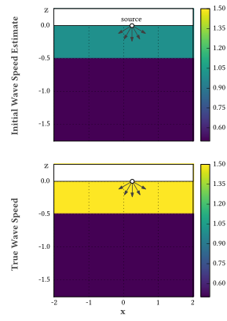
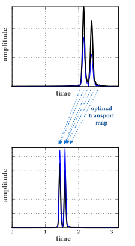
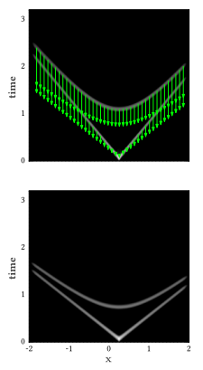
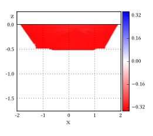

Optimal Transport Imaging
|  |  |  |
| (a) Initial guess for subsurface wave speed (top) and the true wave speed (bottom). A wave is produced at the marked source, and pressure measured all along the surface. | (b) Synthesized data at one surface location (top) is compared with true data (bottom); optimal transport identifies matching peaks. | (c) Complete data for all surface locations: current model's synthesized data, with corrections from optimal transport (top) and true data (bottom) |
|  | ||
| (d) Computed update to initial model, based on the results of optimal transport. |
In seismic imaging, full waveform inversion (FWI) is the current standard for high-resolution imaging. The idea is to reduce the imaging problem to a single large-scale continuous, nonlinear optimization problem, traditionally by minimizing least-squares error in the recorded data. After this reduction, standard local optimization methods can be applied: for instance, preconditioned gradient descent, (nonlinear) conjugate gradient, L-BFGS, or Gauss-Newton. This general process can be applied to any imaging problem.
Unfortunately, standard FWI typically requires a good initial guess of subsurface velocities to obtain reasonable results. The problem lies in how the synthetic data (generated by the current model) the observed data are compared; if they differ by more than half a wavelength, the traditional least-squares objective function is intrinsically unable to correct the error.
In this project, we are leveraging optimal transport, a mathematical tool already in use in computer graphics, in an effort to increase FWI's robustness. Unlike the usual least-squares objective, optimal transport is perfectly suited to matching signals that differ by large time shifts, and it is practical as well due to recent algorithmic advances. Our prototype algorithms are written in Julia for rapid development.
The figures on the right show preliminary results for a simple two-dimensional example. Here optimal transport successfully matches shifted signals, leading to an accurate correction to the initial model.